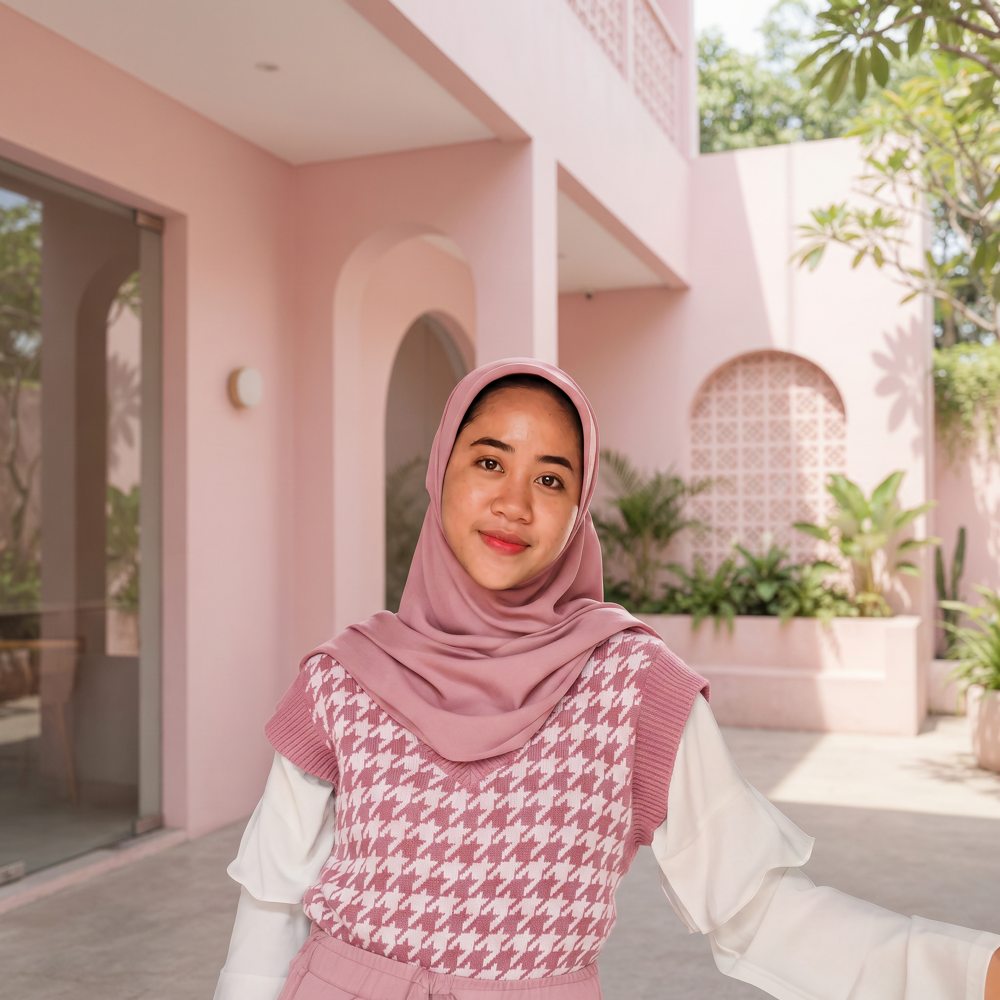

JUNIOR FRONTEND DEVELOPER
Raharjian Sustanadia
Wijayanti.
Informatics student and aspiring Junior Frontend Developer focused on building clean, responsive, and user-friendly web interfaces using HTML, CSS, JavaScript, React, Tailwind CSS, and Laravel!!.
